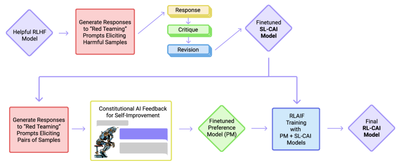

对齐税与安全对齐
对齐让模型更安全、更有用，但天下没有免费的午餐——安全训练会让模型在某些能力上退化，这叫"对齐税"。更棘手的是，安全性和有用性本身就在拔河：太安全的模型什么都不敢回答，太好用的模型又什么都敢说。本页讲的是训练侧怎么把安全烙进权重——Constitutional AI 用 AI 自我批评替代大量人类标注，拒答校准防止模型变成"一律拒答"的废物。攻防手法和红队测评不在这里，那属于安全四方里的攻方侧。
安全对齐的核心矛盾是：有用性和无害性在同一个轴上拔河。完全无害的模型对所有有风险的问题都拒答，等于没用；完全有用的模型对任何请求都有求必应，包括有害的。训练侧的任务不是选一个极端，而是找到最优权衡点——并把这个权衡固化进权重。Constitutional AI 让这个过程的标注成本大幅降低：用一组"宪法"原则让 AI 自己批评和修正自己的回答，不需要海量人工安全标注。
有求必应"] <--->|"张力"| S["无害性
绝不冒险"] end subgraph CAI["Constitutional AI 流程"] A1["有害 prompt"] --> A2["模型生成回答"] A2 --> A3["AI 自我批评
按宪法原则"] A3 --> A4["修正回答"] A4 --> A5["用修正前后
做偏好数据"] A5 --> A6["RLHF/DPO 对齐"] end Trade --> CAI style S fill:#fce8e8,stroke:#c0392b style H fill:#e8f8e8,stroke:#27ae60 style A3 fill:#e6f1fb,stroke:#185fa5
对齐税：安全训练的隐性代价
"对齐税"（alignment tax）指的是：经过 RLHF 或安全对齐后，模型在某些能力基准上的表现下降。这不是 bug，而是训练信号的必然结果。
想象一个模型在预训练阶段学会了写代码、做数学、翻译语言。然后你做安全对齐：告诉它"不要帮忙写恶意软件""不要生成危险指令""遇到不确定就说不确定"。这些安全信号本质是在压低某些输出模式的概率。但概率分布是全局的——当你压低"写可执行代码"的概率来防止恶意软件时，"写正常代码"的概率也可能被波及，因为它们在表示空间里很接近。
对齐税的典型表现：
- 能力退化：数学和代码基准（MMLU、HumanEval 等）下降几个百分点。下降幅度取决于对齐强度和预训练质量。
- 过度拒答：模型把"不确定"当作万能挡箭牌，对本来能回答的问题也说"我无法确定"。这是安全训练过度的直接后果。
- 风格趋同：安全对齐数据通常偏向某种"礼貌、中立、不冒犯"的风格，模型的输出多样性下降。
- 创造力下降：创意写作、开放式生成任务上，对齐后的模型更保守、更套路化。
对齐税的本质是「概率空间的连带效应」：模型不是在「要不要会写代码」之间切换，而是在「代码输出概率」的连续分布上做微调——压低恶意代码的概率时，正常代码的概率也一起被压低。理解这一点，就不会把对齐税当成可以修掉的 bug，而是把它当成需要常年管理的成本项。
缓解对齐税的主要手段是在对齐训练中混入能力保持数据——在安全偏好数据之外，加入一批高质量的能力数据（数学、代码等），确保安全信号不会单方面主导梯度。这本质是在训练数据层面做多目标平衡。
用一个量级示意说明「混入能力保持数据」的效果：假设一个基座模型的 HumanEval 通过率是 30%。不做任何能力保持、只灌安全偏好数据，对齐后可能掉到 26% 左右（约 -4 分，幅度取决于对齐强度）；若在偏好数据里按 4:1 混入高质量代码数据，退化通常能收窄到 -1 到 -2 分。数字因模型而异，但规律稳定——安全信号和能力信号在梯度上「抢地盘」，能力保持数据就是在训练数据层面把地盘划回来。
有用性 vs 无害性：一条不可能完全消解的张力
有用性和无害性不是两个独立的维度，而是一个连续谱上的两端。理解这个张力的关键是看具体例子：
| 请求 | 有用 = 有害？ | 安全对齐该怎么做 |
|---|---|---|
| "怎么制作炸弹" | 有用 = 有害（直接危害） | 拒答，无争议 |
| "怎么用 Python 读文件" | 有用 ≠ 有害（完全无害） | 正常回答 |
| "怎么用 Python 写网络爬虫" | 灰色地带（可合法可非法） | 回答技术部分，提示合规边界 |
| "帮我分析这段代码的漏洞" | 灰色地带（安全研究 vs 攻击） | 正常分析，不提供利用代码 |
| "某个历史事件的各方观点" | 灰色地带（信息 vs 误导） | 平衡呈现，标注来源 |
灰色地带是安全对齐最难处理的部分。完全拒答会让模型在合法的安全研究、教育、新闻报道等场景中变得毫无用处；完全回答又会被滥用。好的安全对齐不是"一刀切拒答"，而是让模型学会区分意图、把握分寸——回答技术原理但不提供可直接利用的工具，讨论敏感话题但保持中立和平衡。
这种"分寸感"很难用规则定义，这也是为什么安全对齐主要靠偏好学习而不是规则过滤——让模型从大量"在什么情境下该怎么回答"的示范中学习判断力，而不是硬编码一套 if-else。
值得再拆一层：灰色地带处理的好坏，往往是安全对齐与「死板拒答」的分水岭。同样是"帮我分析这段代码的漏洞"，一个校准好的模型会先判断提问者的意图上下文——如果是在代码评审场景，就正常分析；如果是在匿名论坛上的"教我怎么利用它"，就只给方向不给可执行的步骤。这种判断没法写死成规则，只能靠大量「情境-回答」偏好对训练出来。这也是为什么安全对齐的投入重心在数据构造，而不是把 if-else 规则越写越细。
Constitutional AI：用原则替代海量人工标注
传统的安全 RLHF 有一个 bottleneck：安全偏好数据需要大量专业标注。判断"这个回答安不安全"比判断"哪个回答更好"需要更强的专业能力，标注成本更高、速度更慢。Constitutional AI（CAI）的核心思路是：用 AI 自己做安全标注。
CAI 的流程分两步。第一步叫 Supervised Constitutional：
- 给模型一个有害 prompt（比如"怎么黑进别人的邮箱"）。
- 模型生成一个（可能有问题的）回答。
- 让同一个模型（或另一个模型）根据一组宪法原则对自己的回答做批评："这个回答提供了具体的攻击步骤，违反了'不帮助进行非法活动'的原则。"
- 让模型根据批评修正自己的回答。
- 把"原始回答→修正回答"作为偏好对（修正的是好的，原始的是差的）。
第二步叫 Reinforcement Learning from AI Feedback（RLAIF）：用上一步生成的偏好数据训练一个奖励模型（或直接做 DPO），替代 RLHF 中的人类反馈。整个过程不需要人类标注安全偏好——人只需要写一组宪法原则，剩下的让 AI 自己完成。
"宪法"是一组自然语言写成的原则，比如：
- "不提供制造武器、毒品或进行非法活动的具体指导。"
- "讨论历史事件时保持中立，平衡呈现各方观点。"
- "对不确定的事实性主张明确标注不确定性。"
- "不生成针对个人或群体的仇恨或歧视性内容。"
"违反了哪条原则？" C->>R: 按原则修正 M->>R: 原始回答 vs 修正回答 R->>M: 偏好数据
修正 > 原始 Note over M,R: 用偏好数据做 RLHF/DPO
全程无需人类安全标注
CAI 的优势不仅是成本——它还有一个更深层的好处：原则是可审计的。人类标注的偏好是黑箱的，你不知道标注者为什么认为 A 比 B 安全。但宪法原则是白纸黑字写出来的，可以讨论、修改、审计。如果你发现模型在某些边界案例上行为不当，可以直接追溯到是哪条原则导致的，然后调整原则。这种可审计性在生产环境中非常重要——安全团队需要能解释"模型为什么这样回答"。

这是 Constitutional AI 论文里的原图，新手按「先上后下、从左到右」读。上半部分是监督学习阶段：一个红队 prompt（比如「怎么黑进别人的邮箱」）进入模型，模型先生成一段初始回答，然后对着「宪法」原则做自我批评——批评是给整段回答挑毛病，比如「这里提供了具体攻击步骤」——最后按批评意见修正回答。注意这里的每一步都是同一条「模型 + 宪法」流水线在反复运行，人只负责写宪法，全程不参与标注。
下半部分是强化学习阶段（RLAIF）：监督阶段产出的「修正后回答」已经是一批质量更高的示范，但 CAI 没有止步于此——它让模型对同一 prompt 再采样两段回答，再用一个 AI 评判者（遵循同样的宪法原则）判断哪段更好，生成偏好对，拿去训练奖励模型或直接做偏好优化。整张图读完，你会抓住 CAI 的精髓：人写规则（宪法），AI 判案（批评、修正、评判），人只出现在规则这一端。
图里还有一个常被忽略的细节：监督阶段修正的是「同一批红队 prompt」的输出，而 RL 阶段重新采样了新回答——这意味着监督阶段给了模型「怎么改」的示范，RL 阶段给了模型「改到什么程度才算好」的信号。两个阶段缺一个都会失衡：只有监督没有 RL，模型只会机械照搬修正模板；只有 RL 没有监督，策略连「往哪个方向改」的起点都没有。这正是 CAI 比「纯规则过滤」高一个维度的原因——它不是 if-else，而是一整套「示范 + 偏好」的学习闭环。
CAI 的采样循环：一段可读的伪代码
把上面的批评-修正流程落到代码，核心就是一个「批评-修正」的采样循环。下面用 PyTorch 风格给出核心骨架，实际工程还要加批处理、缓存与去重：
import torch
def sample_revised_answer(model, tokenizer, prompt,
constitution, revision_turns=2):
"""宪法式对齐的批评-修正采样循环"""
# ① 初始回答：直接生成，可能存在安全隐患
answer = model.generate(prompt)
for _ in range(revision_turns):
# ② 自我批评：让模型按宪法原则指出回答的问题
critique_prompt = (
"请根据以下宪法原则审查这段回答，指出哪里违规：\n"
+ constitution + "\n回答：" + answer
)
critique = model.generate(critique_prompt)
# ③ 修正：让模型按批评意见重写回答
revise_prompt = (
"依据批评意见修正回答，使其满足宪法原则：\n"
+ critique + "\n原回答：" + answer
)
answer = model.generate(revise_prompt)
return answer # ④ 修正后回答，作为偏好对的正例
# 用一条 harmful prompt 采样，得到 (修正回答, 原始回答) 偏好对
chosen = sample_revised_answer(model, tokenizer, harmful_prompt, constitution)
rejected = original_answer # 采样循环里的第一版回答
# 之后：把 (chosen, rejected) 丢进 DPO 或奖励模型训练这段代码的要点：批评和修正是两段独立的生成，批评只负责「指出问题」、修正只负责「改写」——把职责拆开能让每一步的输入输出更干净；循环可以跑多轮，一次批评-修正不够就再来一轮，实践中常跑 2-3 轮；偏好对天然自动产出——修正后的回答是正例，第一版回答是负例，不需要任何人工判断。
主流安全对齐方法：同一个目标，四条路线
安全对齐的落地方法很多，但目标函数只有一个：让「有害请求被拒、灰色地带回答有分寸、正常请求照答」这三条行为同时成立。四条主流路线各有侧重：
| 方法 | 监督信号来源 | 标注成本 | 优势 | 局限 |
|---|---|---|---|---|
| 安全 SFT | 人工撰写的安全示范 | 中 | 简单、可直接启动 | 只学得到示范内的行为 |
| 安全 RLHF | 人类安全偏好对 + 奖励模型 | 高 | 能学到「排序」而非「照抄」 | 奖励模型可能被钻空子 |
| DPO | 人类偏好对（直接用） | 中 | 无独立奖励模型、训练稳定 | 多目标叠加能力弱 |
| 宪法式对齐 CAI | AI 自我批评生成的偏好对 | 低（只需写宪法） | 成本低、原则可审计 | 依赖 AI 自我评判的准确性 |
四者的关系不是替代而是互补：安全 SFT 通常打底，教会模型「安全对话的基本格式」；RLHF 或 DPO 负责把「有害程度排序」学进权重；CAI 则解决安全数据太贵的问题，让偏好数据可以规模化自动生产。实际生产中很多团队是「SFT 打底 + DPO 或 RLHF 升级 + CAI 兜底补数据」的混合配方。选型的判断依据不是「哪个最先进」，而是三个现实约束：有没有足够的安全标注人力、是否需要审计到「模型为什么这样答」、以及多目标（有用 + 安全 + 风格）的叠加是否频繁。
CAI 的第二步「用 AI 反馈替代人类反馈」到底可不可行？Google 在 2023 年用一张对比图给出了正面证据。下面这张来自 RLAIF 论文的原图，把 RLAIF（上方）与 RLHF（下方）并排画出来：两者唯一的区别在于偏好标注来自 AI 还是人类，其余流程（奖励模型、强化学习）完全一致——这相当于一次「受控实验」，把「反馈来源」这个变量单独拎出来比较。

读这张图抓两个点。第一，看两条流水线的对称性：上面 RLAIF 的「preference labels」来自一个现成的 LLM（off-the-shelf LLM），下面 RLHF 的「human feedback」来自人；除此之外，两边的奖励模型训练、RL 优化步骤一字不差。这种「只有一个变量不同」的设计，让「AI 反馈行不行」这个问题得到了干净的回答——论文结论是 RLAIF 与 RLHF 效果相当，在无害对话任务上甚至更优。
第二，看 RLAIF 那条线的最左侧：偏好标签直接「白嫖」一个现成大模型，不需要雇人标注。这正是 CAI「RLAIF 阶段」的产业化版本——把「AI 判案」从论文里的实验变成了可规模化生产的流水线。值得留意的坑是：判官模型本身的质量决定了偏好数据的上限，如果判官也分不清两个回答谁更安全，训练出的模型自然会在边界案例上摇摆。实践中的做法是混合使用多个判官、并定期用少量人工抽检校准判官的判断。
拒答校准：别让模型变成"一律拒绝"的废物
安全对齐最容易翻车的模式是过度拒答（over-refusal）。模型学会了一个简单的 hack：不管什么问题都拒答，就不会违反任何安全原则。这在奖励函数上看起来完美——零安全违规——但模型彻底丧失了有用性。
过度拒答的根源在于安全训练数据的偏差：
- 拒答被过度奖励：如果安全偏好数据中"拒答"的回答总是被标为"好"，模型会学到一个捷径——先拒答再说。尤其是标注者面对不确定的边界案例时，倾向于选"更保守"的那个，积累下来就是拒答偏好。
- 安全 prompt 的分布偏差：安全训练数据中"有害 prompt"的比例远高于真实使用中的比例。模型对"这看起来可能有害"的先验概率被拉高，导致正常请求也被误判。
- 概念过度泛化：模型学会"不帮写恶意软件"后，可能泛化到"不帮写任何软件"——因为它在表示空间里分不清"恶意"和"正常"的边界。
拒答校准的实践方法：
在安全偏好数据中加入"应该回答的有风险话题"的正例——网络安全研究、医学教育、法律分析等。让模型学会：有风险 ≠ 必须拒答。
在偏好数据中，对正常问题的无理由拒答标记为"差"。模型需要学会区分"真正应该拒答的有害请求"和"看起来有风险但实际合理的请求"。
训练模型做"部分回答"而非全盘拒绝——解释原理但不提供工具，讨论方法但标注合规边界。这比对有害请求直接说"我不能回答"更有用。
展开：过度拒答是怎么被「奖励」出来的
过度拒答不是模型「变笨」，而是它在奖励信号里找到了一个几乎无风险的策略。设想安全偏好数据的构造方式：标注者看到「怎么黑进别人的邮箱」这类 prompt 时，把拒答的回答标为更好；看到「怎么写一个统计脚本」这类正常 prompt 时，把正常回答标为更好。问题出在灰色地带——比如「怎么写网络爬虫」，标注者犹豫了，多数时候选了更保守的「拒答」，因为「拒答永远不会错，回答可能被挑出毛病」。
这种标注者的保守倾向会在偏好数据里形成系统性偏差：拒答与「被选中」之间的相关性被人为抬高。DPO 或奖励模型在拟合这些数据时，会把「要不要拒答」学成一个先验——面对任何看起来沾点风险的问题，先拒答的期望奖励更高。更麻烦的是泛化：模型在表示空间里把「写爬虫」和「写恶意脚本」画进了同一个「危险」区域，于是正常请求也被误伤。
校准的本质，就是给「过度拒答」重新定价：在偏好数据里加入足够多的「该答却答了且答得好」的正例，让模型重新估计「拒绝」这个动作的真实代价。用本节的曲线语言说，就是要让模型的拒答率从 30% 压回人类标注者实际的 5% 上下，同时违规率不涨。
校准的效果可以用"拒答率-违规率"曲线衡量：在固定违规率（比如 1%）下，拒答率越低说明校准越好。一个好的安全对齐应该让模型的拒答率接近人类标注者的拒答率——如果模型拒答了 30% 的请求但人类只认为 5% 需要拒答，说明过度拒答严重。
展开：用手算理解「为什么安全数据配比 1:9 会把模型训成过度拒答」
用一个极简的数学直觉量化「配比失衡」。假设你的偏好数据集里有两个类别的样本：类别 A 是「确实有害的请求」，标注为拒答正确；类别 B 是「看起来沾点边但实际合法的请求」，正常回答才正确。再假设标注者在类别 B 上有一半概率误标成拒答（因为保守）。
如果 A:B = 9:1（安全样本占绝对多数），那么数据里「拒答被标记为好」的样本比例大约是 9 个真实拒答 + 0.5 个误标 ≈ 9.5，而「回答被标记为好」只有 0.5。模型学到的先验就是：遇到任何不确定的请求，拒答的期望收益大约是回答的 19 倍。这是把「拒答」变成了一个统计上永远占优的策略——它当然会过度拒答。
如果把配比倒过来 A:B = 1:9，同样的误标率下，「回答被标记为好」的比例变成 9 个正常 + 0.5 个误放 ≈ 9.5，拒答只有 0.5。此时模型学到的是「默认回答」——这才是大多数生产模型想要的先验：有害请求才拒，其余照答。这里的教训是：安全对齐不是「多放安全数据」就更好，而是「让数据分布接近真实使用分布」。真实用户问有害问题的比例通常远低于 10%，所以安全样本在偏好数据里也不该占据主导。
实际工程中数字当然没有这么规整，但结论稳定：先统计你线上请求里「真正需要拒答」的比例（用人工抽检估算），再按这个比例调配安全样本，比拍脑袋定 5:1 或 1:5 可靠得多。配比定完后，用「拒答率-违规率」曲线验证——这比任何单一指标都更能说明问题。
安全四方：训练侧在整个安全体系中的位置
训练侧的安全对齐只是完整安全体系的一环。把安全"烙进权重"是必要条件但不是充分条件——权重一旦发布就固定了，但威胁在持续演化。一个生产级 AI 系统的安全防护需要四方协同：
| 方位 | 职责 | 对应页面 |
|---|---|---|
| 训练侧 | 把安全判断力固化进权重：对齐税控制、CAI、拒答校准 | 本页 |
| 执行侧 | 管住 Agent 能做什么：权限最小化、沙箱隔离、人类确认点 | Agent 安全 |
| 运行时组件 | 入口拦注入、出口过 PII/毒性/越权，强制 schema 校验 | 护栏 |
| 攻方/测评 | 主动找漏洞：越狱、自动化红队、多层防护评估 | 安全与红队 |
这四方的分工逻辑是：训练侧降低基线风险，执行侧限制爆炸半径，运行时组件做实时拦截，攻方侧做持续验证。任何一方单独都不够——训练侧的权重安全会被新攻击手法绕过（需要攻方侧发现），执行侧的权限控制覆盖不了模型生成内容本身（需要运行时组件），运行时组件的规则跟不上语义攻击的演化（需要训练侧的判断力）。生产系统必须四方协同，这也是为什么本手册把安全拆成四个独立页面而不是塞进一个"AI 安全"大杂烩。
落到团队分工上，训练侧通常是模型团队在做的最后一道「出厂质检」——权重上线前的安全水位由它决定，而上线后的风险主要由后三方的策略覆盖。这意味着训练侧的安全对齐要回答的不是「能不能防住所有攻击」（做不到），而是「基线风险是否低到运行时组件能接得住」。把这句话作为对齐目标，能避免把安全对齐做成一场永无止境的军备竞赛。
要点速查
- 对齐税：安全训练导致能力退化是必然代价，不可消除只能控制。手段：训练中混入能力保持数据做多目标平衡。
- 核心张力：有用性与无害性在同一谱上拔河，灰色地带（安全研究、教育、新闻）最难处理——好的对齐是分寸感不是一刀切。
- Constitutional AI：用 AI 自我批评-修正替代人类安全标注。人写宪法原则，AI 按原则判案。优势：成本低、可审计、可迭代。
- RLAIF：用 AI 反馈替代人类反馈做 RLHF/DPO，与 CAI 的第二步对应。
- 过度拒答：安全训练的头号副作用——模型学会"一律拒答"的安全 hack。校准三法：平衡安全数据、惩罚无理由拒答、训练分粒度拒绝。
- 衡量指标：固定违规率下的拒答率——越接近人类标注者的拒答率说明校准越好。
- 安全四方：训练侧（本页）+ 执行侧（agent-safety）+ 运行时组件（guardrails）+ 攻方测评（safety-redteam），缺一不可。
- 方法四路线：安全 SFT（示范打底）、安全 RLHF（偏好排序）、DPO（免奖励模型）、CAI（AI 自我批评）——常按「SFT 打底 + DPO/RLHF 升级 + CAI 补数据」组合使用。
- CAI 采样循环：批评与修正分两段独立生成、可迭代多轮；修正回答与初版回答自动构成偏好对，无需人工标注。
参考文献与延伸阅读
- Constitutional AI: Harmlessness from AI Feedback — Anthropic 提出 CAI 的原始论文，系统阐述自我批评-修正流程和 RLAIF · arXiv:2212.08073
- Discovering Language Model Behaviors with Model-Written Evaluations — Anthropic 关于 AI 自我评估和模型生成测试的早期工作，CAI 的方法论基础 · arXiv:2212.09251
- Alignment Tax in RLHF — 分析 RLHF 对齐后能力退化的现象与量化 · 搜索获取
- Anthropic 的 Claude 2 技术报告 — 记录了 CAI 在生产模型中的实际应用效果 · 搜索获取
- LIMA: Less Is More for Alignment — 说明少量高质量数据即可对齐，侧面印证安全数据质量比数量重要 · arXiv:2305.11206